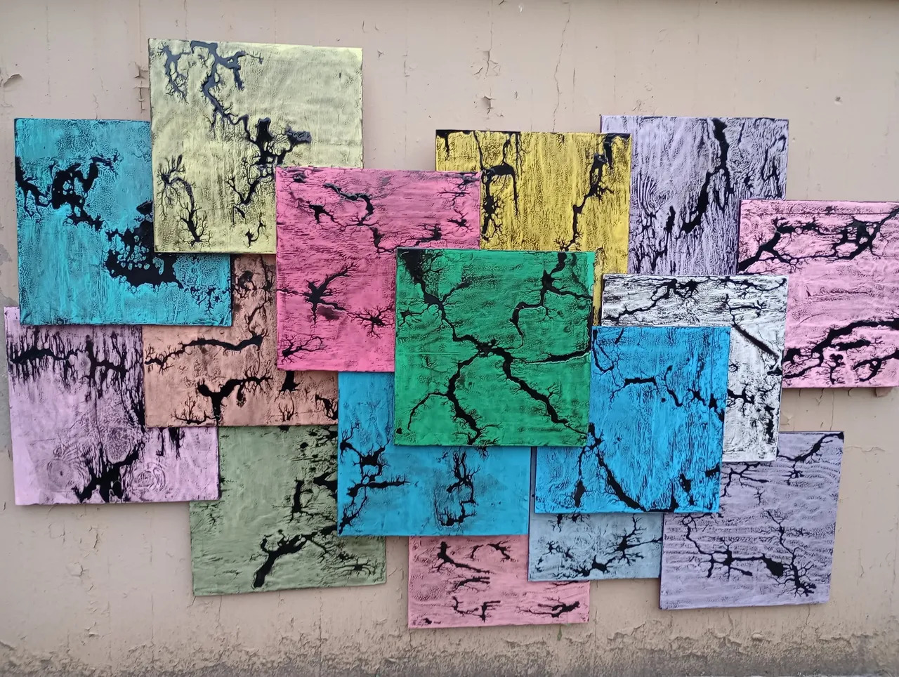

Welcome to The CORBETT Wall Art Mural STORY Advertising Agency
The Corbett Wall art mural was just a plain 120ft concrete wall separating the local neighborhood from the Corbett baseball field. It now features 20, 12x7 foot one of a kind art installations. Each one is unique and has its very own fun story. You can learn more about each panel on the "Corbett Wall" page.